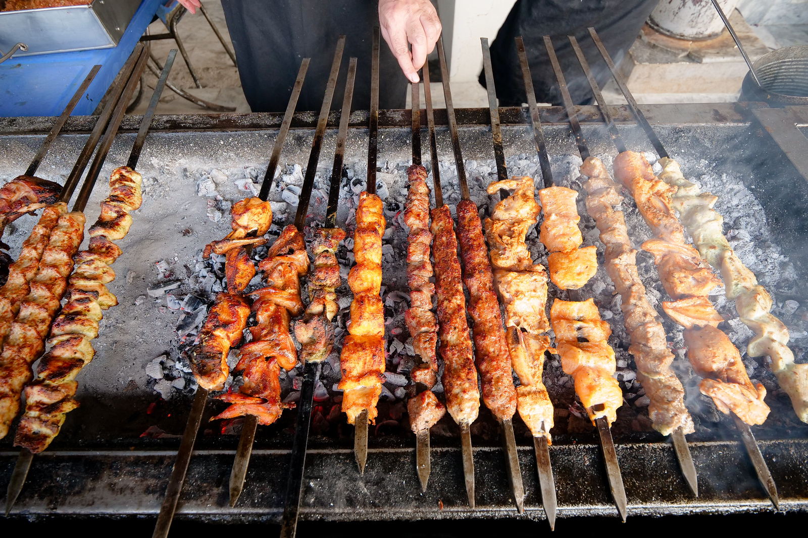

Tikka Kebab

Description
Tikka Kebab is a popular Pakistani dish known for its flavorful and succulent pieces of marinated meat grilled to perfection.
Traditionally, chunks of chicken, lamb, or beef are marinated in a mixture of yogurt, spices, and herbs
before being cooked on skewers. This dish is often served as an appetizer or main course and is enjoyed with naan,
rice, and a variety of chutneys.
Ingredients
- Chicken, lamb, or beef, cut into chunks
- Yogurt
- Lemon juice
- Garlic, minced
- Ginger, minced
- Tikka masala (or a combination of cumin, coriander, paprika, garam masala, turmeric, and red chili powder)
- Ground cumin
- Ground coriander
- Salt
- Oil or melted ghee
- Fresh cilantro, chopped (for garnish)
- Lemon wedges (for serving)
- Sliced onions (for garnish)
- Green chilies, sliced (for garnish)
Recipe
- In a large bowl, combine yogurt, lemon juice, minced garlic, minced ginger, and tikka masala. Mix well.
- Add the meat chunks to the marinade, ensuring they are well coated. Cover and refrigerate for at least 2 hours, or overnight for best results.
- Preheat your grill or oven to high heat.
- Thread the marinated meat onto skewers. Brush with oil or melted ghee.
- Grill the kebabs, turning occasionally, until the meat is cooked through and has a nice char, about 10-15 minutes. If using an oven, cook under the broiler, turning halfway through.
- Once cooked, remove the kebabs from the grill and let them rest for a few minutes.
- Garnish with chopped cilantro, lemon wedges, sliced onions, and green chilies before serving.
- Serve hot with naan or steamed rice, and enjoy with your favorite chutneys.